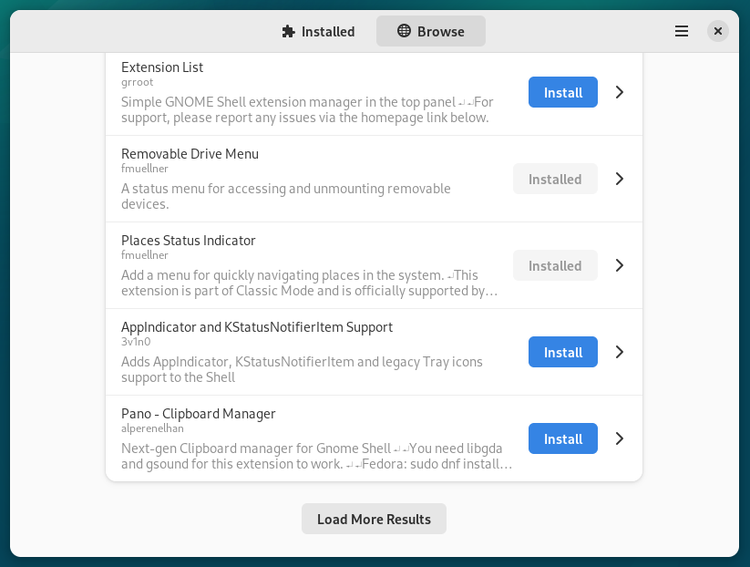
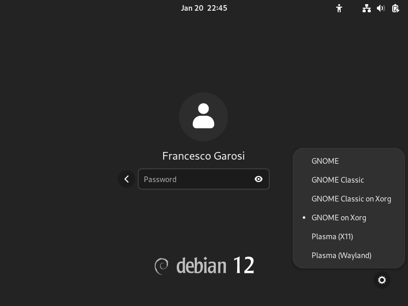

Installation
The easiest way to install When is using pipx: this works both on Windows and Linux, at least in the tested distributions. Installation on Linux is somewhat more complicated due to the need of fulfilling the requirements before successfully running the application. On Windows the requirements are easier to deal with, in the sense that only Python and pipx need to be installed.
Requirements:
Python in a recent release (at least version 3.11)
Note that even though a recent release of whenever is required for When to work as intended, When itself can be used to properly install and configure the core scheduler as described below.
Windows
These steps can be followed on both Windows 10 and Windows 11:
install Python using one of the official installation methods
install pipx by issuing the command
py -m pip install --user pipxin a console window: after installation launchpipx ensurepathfrom the command promptinstall the latest release of When, using pipx:
pipx install https://github.com/almostearthling/when-command/releases/latest/download/when-command-latest.zip
close the current console window, and open a new one: this is to ensure that the updated
PATHenvironemnt variable is activeinstall whenever using the When installation tool:
when tool --install-wheneverlaunch the configuration utility, by typing
when configon the command line: create a task and a condition of your choice, and save the configuration file by clicking the Save button. The simple trace example in the tutorial can be a good choice to verify that everything works as expected.
Once a configuration is available, the resident application can be started from the command line using the when start command. A shortcut can be created as described below. On Windows, the when-bg command can be used instead of when to launch the application detached from a console window.
Linux
These steps can be followed on recent Linux distributions that derive from Debian such as Ubuntu and Mint, using a terminal:
install, as root or via sudo, the common requirements:
sudo apt install build-essential libdbus-1-dev pkg-config \ libx11-dev libxss-dev libglib2.0-dev \ libcairo2-dev libgirepository-1.0-dev \ gir1.2-ayatanaappindicator3-0.1 \ python3-tk python3-pip pipx
On Debian, specifically, the introspection package is called
libgirepository1.0-devinstead oflibgirepository-1.0-dev, and an extra package is needed (the Gnome shell extension manager) so use the following command:sudo apt install build-essential libdbus-1-dev pkg-config \ libx11-dev libxss-dev libglib2.0-dev \ libcairo2-dev libgirepository1.0-dev \ gir1.2-ayatanaappindicator3-0.1 \ gnome-shell-extension-manager \ python3-tk python3-pip pipx
Then, if you use Debian, launch the Extension Manager, choose the Browse tab, scroll down to AppIndicator and KStatusNotifierItem Support (you can use the search bar to find the entry) and install it

Make sure that it is enabled in order for When to work.
On other, non-Debian based distributions, there are probably equivalent packages to install for When to function properly.
launch
pipx ensurepathfrom the terminal: it should be done as the current user and not as rootinstall the latest release of When, using pipx:
pipx install https://github.com/almostearthling/when-command/releases/latest/download/when-command-latest.zip
close the current console window, and open a new one: this is to ensure that the updated
PATHenvironemnt variable is activeinstall whenever using the When installation tool:
when tool --install-whenever
launch the configuration utility, by typing
when configon the command line: create a task and a condition of your choice, and save the configuration file by clicking the Save button. The simple trace example in the tutorial can be a good choice to verify that everything works as expected.
Once a configuration is available, the resident application can be started from the command line using the when start command. A shortcut can be created as described below. The when-bg command also exists on Linux, but its behavior is absolutely identical to when.
On non-Debian-based distributions, the package manager and the package names in step 1 will be different, while everything else should work exactly as described above. For instance, on Fedora, When runs apparently without major problems by installing the appropriate packages as follows:
sudo dnf group install c-development development-tools
sudo dnf install libX11-devel libXScrnSaver-devel
sudo dnf install python3-tkinter python3-pip pipx python3-devel
sudo dnf install cairo-devel cairo-gobject-devel
sudo dnf install libglibutil-devel glib2-devel gobject-introspection-devel
sudo dnf install libappindicator-gtk3
sudo dnf install dbus-devel
and adding the Gnome Shell Extension Manager using the Software utility, as well as AppIndicator and KStatusNotifierItem Support using the extensions manager. After this, steps 2 to 6 are the same as in Debian based distributions.
Tip
In case the appearance of When is quirky, for example the text elements in the interface are unreadable, you might need to start the desktop environment in an X.org session instead of Wayland that is the default on many Linux distributions:

Older editions of Wayland have incomplete support for the GUI library used by When, which on the other side is the one that ships with Python by default.
Create Application Icons
The --create-icons subcommand can be used to create icons in the Start or Applications menu, and on the user desktop. In particular, the following subcommand:
when tool --create-icons --autostart
will create the appropriate icons in the menu and create a shortcut that launches When and activates the whenever scheduler each time the desktop session is started.
Upgrade
The upgrade process is quite easy with this type of setup, and it just consists in the following command, issued from a terminal or command window (depending on the host operating system):
pipx upgrade when
and there is no need to recreate the program icons, as the existing ones will continue to work. It might be necessary to stop When during the upgrade process. To upgrade whenever it is sufficient to repeat its installation step, that is:
when tool --install-whenever
which will always download and install the most recent binary release.
Installing Directly from the Repository
If you have git installed and in your PATH, you can choose to install a version that has not been published yet as a release, using the same pipx based method. Instead of using the URL shown above, pointing to the ZIP file corresponding to the latest release, you can use the URL that points to the repository, or even a branch: launch
pipx install git+https://github.com/almostearthling/when-command.git
to install from the main branch, which is the release candidate and is kept as stable as possible. In order to install from the development branch, the command changes as follows:
pipx install git+https://github.com/almostearthling/when-command.git@development
and can be used on both Linux and Windows. The rest of the installation process does not change in both cases. Please note, however, that subsequent upgrades will use the same upstream source: if you want to change source (be it a different repository branch, or the release ZIP file), When has to be uninstalled first by running pipx uninstall when.
Installation Scope
Both the installation of When using the pipx method, and the installation of whenever using the --install-whenever tool, are performed at the user level: neither one requires other privileges than write in the home directory. However, this also means that no other user, except the one performing the above described actions, will be able to access either When or whenever.